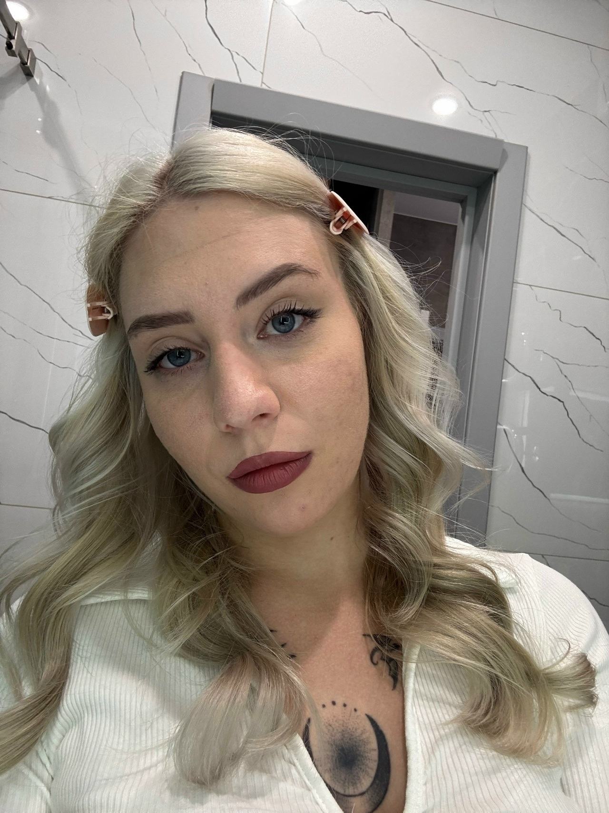
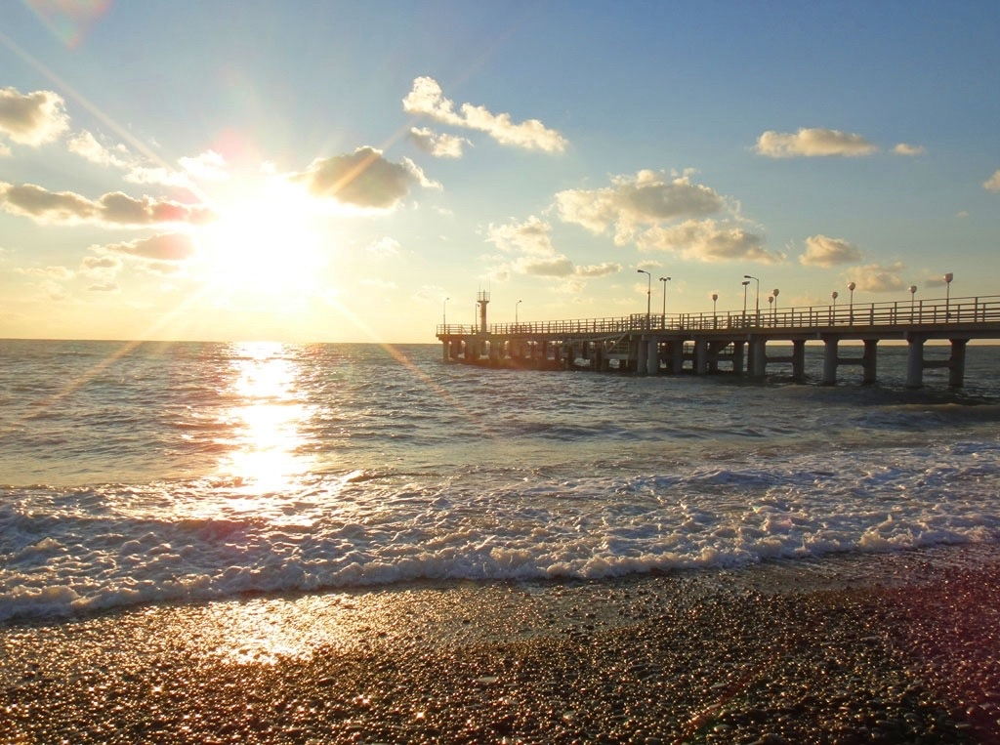
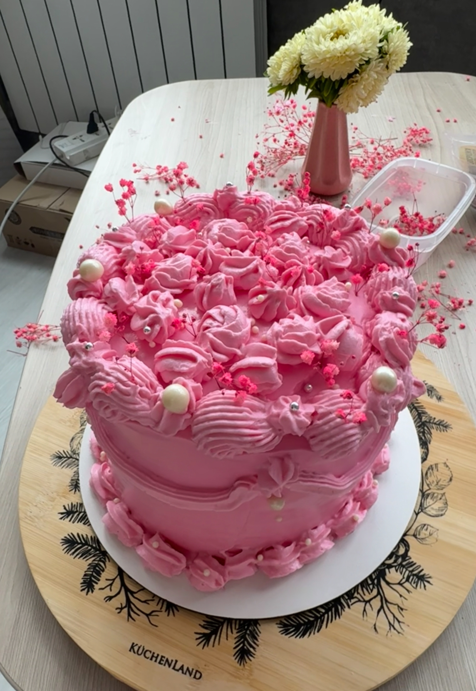

Обо мне
Здравствуйте! Я студентка, учусь и проживаю в городе Иркутск. Планирую открыть свою кондитерскую и применить профессиональные навыки по ведению бизнеса на практике. А главной изюминкой моего заведения будет молекулярная кухня!
Образование
Иркутский Национальный Технический Университет
Мое обучение началось в 2023 году. Я поступила в институт авиамашиностроения и транспорта на специальность "инженер-конструктор самолето- и вертолетостроения". Через год обучения я поняла, что мне совершенно не интересна эта специальность и нужно выбрать что-то более близкое сердцу и что поиогло бы мне осуществить мечту. Когда я пошла забирать документы из дирекции, мне предложили перевестись в институт экономики, управления и права на специальность "Международная экономика и бизнес", где я сейчас и обучаюсь. Мое обучение по другой специальности началось с февраля 2025 года, я снова оказалась на 1 курсе. Обучение по новой специальности мне очень нравится, и это действительно то, в чем я бы хотела стать хорошим специалистом. В дальнейшем я планирую получить второе высшее образование в филиале французского гастрономического интитута в рамках Сибирского Федерального Университета по специальности "Кондитерское искусство"
Навыки
- Анализ международных рынков
- Обработка и визуализация данных
- Создание интерактивных презентаций с помощью инструмента "Genially"
- Навыки межкультурной коммуникации Знание делового этикета Обширный опыт публичнных выступлений
Хобби и увлечения
У меня три главные страсти - сладости, природа и автомобили. Кондитерское искусство позволяет мне творить и создавать что-то прекрасное, а путешествия и трансляции автомобильных гонок, в частности формулы-1, позволяют мне созецать что-то прекрасное, созданное другими людьми и природой.
 